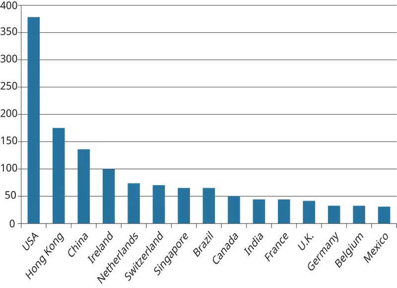
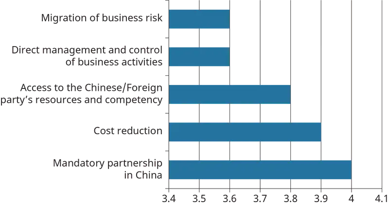

Chapter 6: International Management¶
Introduction¶
Learning Outcomes
After reading this chapter, you should be able to answer these questions:
- Why is it important to understand and appreciate the importance of international management in today’s world?
- What is culture, and how can culture be understood through Hofstede’s cultural framework?
- How are regions of the world categorized using the GLOBE framework, and how does this categorization enhance understanding of cross-cultural leadership?
- Why is an understanding of cultural stereotyping important, and what can students do to prepare for cultural stereotyping by looking at social institutions?
- What steps can you undertake to be better prepared for cross-cultural assignments?
- What are the main strategies that companies can use to go international?
- Why might it be necessary for a company to go international, and how might it accomplish this goal?
Exploring Managerial Careers: Mike Schlater, Domino’s Pizza
Domino’s Pizza has more than 14,000 stores worldwide. As executive vice president of Domino’s Pizza’s international division, Mike Schlater is president of Domino’s Canada with more than 440 stores. Originally from Ohio, Schlater started his career with Domino’s as a pizza delivery driver and worked his way up into management. Schlater saved his earnings, and with some help from his brother, he was able to accept the opportunity to have the first international Domino’s franchise in Winnipeg, Manitoba, in 1983. Within weeks, Schlater’s store in Canada reached higher sales than his previous store in Ohio had ever attained.
However, it was not an easy start. Schlater faced a number of challenges going international. First, he had to identify the international suppliers and get them approved to sell their products to Domino’s. This shows one of the challenges that organizations face when entering new global markets. To meet quality standards designed to protect a brand, companies must undertake an extensive review of potential new suppliers to ensure consistent product quality.
Second, as discussed in this chapter, a major challenge when opening a business on foreign soil is negotiating the political, cultural, and economic differences of that country. Domino’s relies on local master franchisees to take advantage of their local expertise in dealing with marketing strategies, political and regulatory issues, and the local labor market. The master franchisees of Domino’s Pizza’s international business are individuals or entities who, under a specific licensing agreement with Domino’s, control all operations within a specific country. Such master franchisees have deep local knowledge that helped Domino’s succeed. For example, it takes local experience to know that only 30 percent of the people in Poland have phones, so carryout needs to be the focus of the business; that Turkey has changed its street names three times in the past 30 years, so delivery is much more challenging; or that, in Japanese, there is no word for pepperoni, the most popular topping worldwide. These are just a few of the challenges that Domino’s has had to overcome on the road to becoming the worldwide leader in the pizza delivery business. Under the leadership of people like Schlater, and with the help of dedicated, local master franchisees, Domino’s has been able to not only compete in, but lead the global pizza delivery market.
Such an impressive career path might seem like luck to some, but Schlater achieved his success due to determination and attention to detail. Additionally, despite such success, Schlater has been socially responsible. Consider that Schlater recently won $250,000 in a lottery. Since Schlater believes in philanthropy, he donated the entire amount to Cardinal Carter High School in his hometown. Over the years, Schlater has donated millions of dollars to foundations and charities, such as the London Health Sciences Foundation, because he now has the ability to indulge after spending decades climbing the corporate ladder at Domino’s Pizza. Such charitable focus has also shone light on his socially responsible tendencies, another critical aspect of success.
Schlater is now president of Domino’s of Canada, Ltd., which operates more than 440 stores located in every province, as well as the Yukon and Northwest Territories.
Sources: “Domino’s Pizza Corporate Facts,” http://phx.corporate-ir.net, accessed June 20, 2017; Domino’s Canada website, https://www.dominos.ca, accessed June 20, 2017; Trevor Wilhelm, “Domino’s CEO, who lives in Leamington, will donate $250K lotto winnings to high school,” Windsor Star, February 27, 2015.
The above example shows that Domino’s has successfully managed global challenges to become successful internationally. For many business leaders over the past few decades, the business world was becoming “flat” because barriers to trade were slowly disappearing. The expectation was that soon global companies would operate unconstrained by national borders. However, recent trends suggest that the business world is now seeing a barrage of protectionism and nationalism as many countries and their leaders emphasize the negatives of globalization. Consider that the U.K. is currently experiencing the Brexit negotiations and a potential exit from the European Union. The European Union has provided the means to the U.K. to freely trade with a number of other European countries without hindrance. At the same time, rhetoric about policies and practices to protect local industries against global competition and to protect local jobs is increasing. But does this mean globalization is dead? Far from it—experts have analyzed recent trade data and shown that globalization is actually strengthening. The DHL Global Connected Index, which tracks the flow of capital, information, trade, and human resources, indicates that the degree of globalization continues to rise. This finding suggests that any serious management scholar will need to be aware of the importance of international management and the need to be able to adapt practices to ensure that management of global operations goes smoothly.
No company is immune to the forces of globalization. Whether you run a small company based in Wisconsin or manage a Fortune 500 company, you are affected by global forces. You may compete with firms from China or India, have coworkers from Egypt, Brazil, or Germany, or have to negotiate with someone from Russia. This chapter will prepare you for the complexities of international management by discussing some of the crucial issues faced by managers of international companies today. The chapter begins by discussing some of the key factors in making the business world global today and why an understanding of international management is so critical. The chapter then explores the importance of national cultures because cross-cultural conflicts can make an international business difficult to navigate and manage. By understanding the countries and the cultures they find themselves in, international managers can better prepare to deal with such differences, including appropriate preparation for cross-cultural assignments, preferred leadership styles around the world, and the potential for stereotyping.
The chapter concludes with coverage about the various approaches to taking a company international, the advantages and disadvantages of each approach, and the types of business strategies available to companies in the international arena.
6.1 Importance of International Management¶
- Why is it important to understand and appreciate the importance of international management in today’s world?
International management is a critical area for any serious student of management because of globalization, the worldwide phenomenon whereby the countries of the world are becoming more interconnected and where trade barriers among nations are disappearing. Companies of all kinds are no longer limited to producing and selling their goods and services in domestic markets. In fact, companies are encouraged to explore global markets to stay competitive and are thus likely to have business activity anywhere in the world. Globalization is being facilitated by several key factors, and companies that want to succeed in this environment must understand the key factors that are making the business world more globally connected.
Globalization Factor 1: Lowering Trade Barriers¶
The first critical factor is the lowering of trade barriers through trade agreements, government policies through which countries agree to eliminate cross-border barriers to trade and to promote global integration. To understand the importance of trade agreements, it is necessary to note that countries have long used tariffs to protect local industries and companies. Tariffs are taxes that are added to the price of imported international products. Because these tariffs are usually passed along to the consumer in the form of higher prices, imposing tariffs on imported goods gives domestic companies a price advantage and protects them from foreign competition. The goal of most trade agreements has been to reduce or eliminate tariffs and other barriers to make cross-border trade easier.
One of the more significant worldwide trade agreements are the rules members in the World Trade Organization (WTO) agree to. The WTO is the only truly global organization that deals with the rules of trade around the world. It was established January 1, 1995, and had 164 country members as of July 2016. The WTO serves many functions, but the four most important are 1) providing the mechanism for countries to negotiate trade agreements, 2) monitoring such agreements, 3) providing the means to handle trade disputes, and 4) providing training to less-developed countries to implement agreements.
Globalization Factor 2: Foreign Direct Investment¶
Foreign direct investment (FDI) refers to deliberate efforts of a country or company to invest in another country through the form of ownership positions in companies in another country. In 2017, global FDI flows amounted to USD $1.52 trillion.
Figure 6.2 shows the top 15 recipients of FDI in 2016. As you can see, many of the world’s developed economies, such as the U.S., Germany, Canada, and France, are among the top recipients of FDI. However, it is also important to note that many emerging markets, such as China, Brazil, Mexico, and India, figure prominently on this list. Emerging markets, defined as those markets in nondeveloped countries that present tremendous potential for multinationals, have played a critical role in the global business environment for the last decade. Countries such as Brazil, India, China, and South Africa have all experienced tremendous growth and are driving business trends.

An important consequence of the rise of emerging markets has been the growing importance of emerging market multinationals. Emerging market multinationals are influential companies from emerging markets that compete head-on with established multinationals and rewrite the rules of competition by using new business models. Consider the case of CEMEX, the Mexican cement manufacturer; Shoprite, the South African retailer; and WIPRO and Infosys, India’s leading software companies. These emerging market multinationals are industry leaders in their fields and are pushing more established multinationals to the competitive edge.
The lowering of trade barriers and the increase in foreign direct investment indicate that global trade will continue to stay strong and contribute to globalization. Such trends suggest that companies will need to continue to contend with and take advantage of global opportunities. The rising competition from emerging markets and emerging market multinationals means that companies will need to continue to understand and manage the global environment to compete.
Globalization Factor 3: The Internet¶
Thanks to the pervasiveness of the Internet today, any company in the world can sell its products to anyone in the world. In fact, the developments in information technology and the reduction in costs of technological equipment mean that any multinational can reach anyone in the world. Social media, such as Twitter and Facebook, also provide a means for multinationals to build relationships with customers worldwide. Data also suggests that even countries that previously had little access to the Internet are now experiencing tremendous growth. To give you more insights on Internet growth, consider Figure 6.4.
As Figure 6.4 shows, the pervasiveness of the Internet cannot be ignored. Collectively, Internet users amount to 3.8 billion individuals, representing half of the world’s population. Additionally, while the penetration rates in some regions such as Europe and North America are high, the rates of penetration in regions in Asia (46.7%) and Africa (31.2%) suggest that these countries have great potential. When coupled with the dizzying growth rates of the Internet in regions such as Africa (more than 8000% increase from 2000 to 2017), Latin America (2137%), and the Middle East (4374%), any multinationals have to appreciate the importance of the growth of the Internet.
What are the implications of this factor for international management? As mentioned earlier, companies located anywhere in the world will be able to find new markets and new ways to reach new customers. Consider the case of Russian entrepreneur Dmitrii Dvornikov, who was selling jewelry and table clocks made from Russian semiprecious stones. Until 2013, Dvornikov was not able to expand beyond local markets. However, he decided to list his products on eBay. This has allowed his business sales to grow by 30%. Such success was spurred by the implementation of software by eBay’s operators in Russia. This software enabled smaller companies to sell anywhere in the world. Such factors have greatly expanded e-commerce, the buying and selling of products using the Internet.
E-commerce doesn’t necessarily have to be between companies and individual customers. In fact, there are many other forms of e-commerce, such as business-to-consumer (e.g., eBay), business-to-business (B2B, where companies sell to each other), consumer-to-business (C2B, where consumers can sell to businesses), and consumer-to-consumer (C2C, where consumers can sell to other consumers). These forms of e-commerce are all contributing to making the global business world more interconnected.
It is critical for multinationals to appreciate the importance of the Internet. Not only can companies reach new consumers, but they can also improve their business models. Additionally, the Internet provides the opportunity to companies to build relationships with consumers worldwide.
Concept Check
Describe the lowering of trade barriers and its impact on international business.
What is foreign direct investment?
What has the role of the Internet had on international business?
6.2 Hofstede's Cultural Framework¶
- What is culture, and how can culture be understood through Hofstede’s cultural framework?
As the business world becomes more global, employees will likely face someone from another country at some point in their careers, companies will negotiate with companies from other countries, and even employees of domestic companies will likely encounter someone from another country.
Furthermore, trends suggest that immigration, the movement of people from their home country to other countries, will continue to grow worldwide, a process that will contribute to making companies’ workforces increasingly diverse. Additionally, many multinational companies rely on expatriates to run their local operations. An expatriate is foreign employee who moves to and works in another country for an extended period of time. All of these trends mean that during your career you are likely to encounter someone from a different culture and that the potential for cross-cultural tensions is high. It is therefore important for any international management student to understand culture to better prepare for dealing with such tensions.
According to Geert Hofstede, a Dutch social psychologist, culture is “the collective programming of the mind which distinguishes the member of one group or category of people from another.” It tells people who they are, which behaviors are appropriate, and which are not acceptable in any society. It affects almost everything we do, see, feel, and believe. In fact, if you have heard of the “American dream,” where if one works hard, one can achieve one’s dream, you are aware of one characteristic aspect of American culture.
Consider any aspect of your life, and it is likely influenced by your culture. The food you eat, the clothes you wear, and even how you address your boss or teacher are influenced by your culture. Societies develop cultural norms, values, and beliefs to assist their members in adapting to their environments.
Why is an understanding of culture critical to a manager in a global environment? As you have already seen, anyone from any country is likely to encounter someone from another country at the workplace. Such interactions can result in misunderstanding or tensions if not properly managed. Business magazines are full of examples of cross-cultural misunderstandings that have doomed relationships and business. For another example, U.S. managers sent to Beijing, China, get frustrated because they find that their hosts are more interested in socializing than concluding a deal. Understanding Chinese culture would have prevented the latter misunderstanding because the U.S. managers would understand that it is very important for Chinese companies to get to know who they are working with before signing any deal. In this section, you will learn about one of the most powerful tools for understanding cultural differences: Hofstede’s model of national culture. (See Table 6.1)
Table 6.1
| Hofstede’s Model of National Culture | ||||
|---|---|---|---|---|
| Countries | Power Distance | Individualism | Uncertainty Avoidance | Masculinity |
| Australia | Low | High | Low | High |
| Canada | Low | High | Low | High |
| China | High | Low | Medium | Medium |
| Germany | Low | High | Medium | High |
| Mexico | High | Medium | High | High |
| France | High | High | High | Low |
| Spain | Medium | Medium | High | Low |
| Greece | Medium | Medium | High | Medium |
| Denmark | Low | High | Low | Low |
| Finland | Low | High | Medium | Low |
| Brazil | High | Medium | Medium | Medium |
| India | High | Medium | Low | Medium |
| Japan | Low | Medium | High | High |
| U.K. | Low | High | Low | High |
| U.S.A. | Low | High | Low | High |
| Adapted from Geert Hofstede, “Culture’s consequences: Comparing values, behaviors and institutions across nations,” 2nd edition, 2001, Thousand Oaks, CA: Sage Publications. | ||||
Although there are several frameworks to understand cultural differences, one of the most powerful is Hofstede’s model. Hofstede is a Dutch social scientist who developed his model by surveying over 88,000 employees in IBM subsidiaries from 72 countries. Hofstede developed this cultural model primarily on the basis of differences in values and beliefs regarding work goals. Hofstede’s framework is especially useful because it provides important information about differences between countries and how to manage such differences. Recent reviews of research have shown the utility of Hofstede’s framework for a wide variety of managerial activities, such as change management, conflict management, leadership, negotiation, and work-related attitudes.
Cultural Dimension 1: Power Distance¶
Hofstede’s original survey of the more than 88,000 employees of the 72 countries revealed four major cultural dimensions. The first cultural dimension is power distance, the degree to which members of a society accept differences in power and authority. In societies with high power distance, people are more likely to accept that power inequality is good and acceptable. People in high power distance societies are more likely to accept that there are some powerful people who are in charge and that these people are entitled to special benefits. In contrast, societies with low power distance tend to consider that all members are equal. Table 6.2 shows the levels of power distance (and the other cultural dimensions discussed later) in 15 selected societies. Hofstede’s scores range from 100 (the highest power distance) to 0 (the lowest). In the table, we break Hofstede’s scores into high (70–100), medium (40–69), and low (0–39).
Table 6.2
| Implications of Power Distance | ||
|---|---|---|
| Type of Work Activity | High Power Distance | Low Power Distance |
| Organizational structures | • Very centralized • Tall hierarchies with clear levels of managers and subordinates |
• Flat organizational hierarchies • Decentralized structures |
| Managerial authority | • Concentration of authority at the top • Managers rely on formal rules to manage • Authoritative managerial style and decision making |
• Dispersed authority • Managers rely on personal experience • More consultative or collaborative forms of decision making |
| Relationship with supervisors | • Subordinates expect to be told what to do • Perfect boss is seen as one who is an autocrat • Information sharing constrained by hierarchy |
• Subordinates often expected to be consulted • Ideal manager is seen as a democratic leader • Openness to sharing information |
| Other issues | • Wide salary gap between top and bottom of organization • Managers often feel underpaid and dissatisfied with careers |
• Low salary gap between top and bottom of company • Managers feel paid adequately and are satisfied |
| Adapted from Geert Hofstede, “Culture’s consequences: Comparing values, behaviors and institutions across nations,” 2nd edition, 2001, page 107-108, Thousand Oaks, CA: Sage Publications. | ||
As Table 6.1 shows, many of the emerging markets in regions such as Asia and Latin America, such as India, Brazil, and Mexico, all have high power distance scores. In such countries, the concern for hierarchy and inequality in organizations is rooted in early socialization in the family and school. In these countries, children are expected to obey their parents and elders. When these children enter school, teachers assume the dominant role. Children must show respect, and they seldom challenge a teacher’s authority. As these individuals take on work roles, the allegiance to teachers is transferred to bosses. Thus, people in high power distance societies will seldom question their supervisors. In contrast, Anglo countries such as the United States, Canada, and the United Kingdom have low power distance. In these countries, people do not expect power differences, and everyone is seen as an equal.
Management Implications of Power Distance¶
What are the implications of power distance for international management? Table 6.2 shows some of the key differences between high and low power distance societies for work-related issues. As you can see, it is important for managers to express their authority and know-how in high power distance societies. Subordinates expect clear directions from their managers and assume they will be told what to do. In high power distance societies, employees will often equate age with wisdom and seniority. For instance, if a multinational is sending people to negotiate in a high power distance country, they should send higher-level and older managers if they want to be taken seriously.
Cultural Dimension 2: Individualism and Collectivism¶
The second cultural dimension we consider here is individualism/collectivism. Individualism refers to the degree to which a society focuses on the relationship of the individual to the group. Collectivism refers to the degree to which a society focuses on the relationship of the group as a whole.
In societies with high individualism (or low collectivism) scores, individuals are valued for their achievements and are rewarded and recognized for such achievements. In contrast, people who live in societies with low individualism (high collectivism) are seen as being part of a wider group, known as the in-group. The in-group includes the family, team, or social class, and how individuals relate to such wider groups is seen as important to their success. In other words, people’s success is gauged by how others in their groups view and support them.
Table 6.1 shows the levels of individualism in the selected 15 nations. We again see similar patterns whereby more Anglo cultures such as the U.S., Canada, and the U.K. have relatively high levels of individualism. In contrast, Asian, Latin American, and many emerging countries tend to have cultures that are either on the medium or low range of the individualism dimension. Table 6.3 shows some of the implications of individualism for management. The effects of most management practices are determined by whether they are done at a group or individual level. For example, in countries with low individualism, one will find that employees are hired and promoted mostly on the basis of association with a larger group, such as a university or high school. In such societies, emphasis is placed on loyalty, seniority, and age. To operate smoothly in such societies, companies need to appreciate the importance of the larger social group. Additionally, as Table 6.3 also shows, care should be taken in terms of how rewards are distributed. Rewarding individual team members in low individualism societies can result in tensions because the individual team member may become stigmatized. In such cases, rewards done on a group level may work best.
Table 6.3
| Implications of Individualism | ||
|---|---|---|
| Type of Work Activity | Low Individualism/High Collectivism | High Individualism/Low Collectivism |
| Relationship with companies | • Employees act in the interest of in-group (members of the family or same university) • Employee commitment to company relatively low • Employee-employer relationships is almost like a family link |
• Employees act in their own interests • Employee commitment to organizations high • Employee-employer relationship based on the market |
| Human resource, management | • Hiring and promotion takes in-group into consideration • Better to reward based on equality (give everyone the same reward) rather than equity (base reward on work effort) Relatives of employees preferred in hiring • Training best when focused at group level |
• Hiring and promotions based on rules • Family relationships unimportant in hiring • Better to reward based on equity • Training done best individually |
| Other issues | • Belief in collective decisions • Treating friends better than others is normal • Support of teamwork • Less mobility across occupations • Personal relationships very critical in business |
• Belief in individual decision making • Treating friends better than others at the workplace is considered unethical • More mobility across occupations within company • Tasks and company prevail over personal relationships in business |
| Adapted from Geert Hofstede, “Culture’s consequences: Comparing values, behaviors and institutions across nations,” 2nd edition, 2001, page 169-170, Thousand Oaks, CA: Sage Publications. | ||
Cultural Dimension 3: Uncertainty Avoidance¶
Hofstede’s third cultural dimension is uncertainty avoidance, the degree to which people in a society are comfortable with risk, uncertainty, and unpredictable situations. People in high uncertainty avoidance societies tend to want to avoid uncertainty and unpredictability. As a result, work environments in such countries try to provide stability and certainty through clear rules and instructions. In contrast, societies with low uncertainty avoidance are comfortable with risk, change, and unpredictability. In these countries, risky and ambiguous situations are less likely to upset people.
Table 6.1 shows details of the levels of uncertainty avoidance for the selected 15 countries. We see that Anglo and Scandinavian countries have relatively lower uncertainty avoidance scores. In contrast, many emerging markets (such as Brazil, Mexico, and China) have medium to high uncertainty avoidance scores. Such findings suggest that companies should adapt their practices to conform to the levels of uncertainty avoidance. In high uncertainty avoidance countries, for example, managers are advised to provide structure and order to reduce uncertainty and ambiguity for subordinates. Companies in these cultures have many written rules and procedures that tell employees exactly what the organization expects of them. Additionally, managers should give clear and explicit directions to their subordinates about exactly what is expected of them in performing their jobs. By reducing any ambiguity, subordinates are less anxious.
In contrast, in low uncertainty avoidance countries, subordinates are much more comfortable and ambiguity. Managers can therefore give more flexibility and freedom to employees. Design of organizations also allows for fewer rules and regulations.
Table 6.4 provides more detail on the implications of uncertainty avoidance on several managerial aspects.
Table 6.4
| Implications of Uncertainty Avoidance | ||
|---|---|---|
| Type of Work Activity | Low Uncertainty Avoidance | High Uncertainty Avoidance |
| Relationship with companies | • Weak loyalty to companies • Average duration of employment shorter • Preference for smaller organizations |
• Strong loyalty to employing organizations • Employment are long term in duration • Preference for larger companies |
| Characteristics of supervisors/managers | • Superiors optimistic about subordinate ambition and leadership abilities • Top managers usually involved in strategy • Power of superiors based on relationships and position • Transformational leaders preferred |
• Superiors pessimistic about subordinate ambition • Top managers often involved in operations • Power of superiors based on control of uncertainties • Hierarchical control roles preferred |
| Entrepreneurship and innovation | • Innovators feel less constrained by rules • Renegade championing • Tolerance for ambiguity in procedures and structures • Innovation welcomed |
• Innovators feel constrained by rules • Rational championing • Formalized management structures • Innovation resisted |
| Based on Geert Hofstede, “Culture’s consequences: Comparing values, behaviors and institutions across nations,” 2nd edition, 2001, page 169-170, Thousand Oaks, CA: Sage Publications. | ||
Cultural Dimension 4: Masculinity¶
The fourth and final dimension we consider is masculinity, the degree to which a society emphasizes traditional masculine qualities such as advancement and earnings. In high masculinity societies, work tends to be very important to people, gender roles are clear, and work takes priority over other aspects of a person’s life, such as family and leisure. In addition, masculine societies emphasize earnings and achievements, and employees tend to work very long hours and take very little vacation time.
Table 6.5 shows the masculine scores for selected societies. As the table shows, Anglo cultures such as the U.S. and Canada tend to have high masculinity. This is not surprising given that both the U.S. and Canada tend to have some of the highest number of hours worked. In contrast, Latin European countries such as France and Spain have much lower masculinity as reflected in the importance of leisure in these societies. Scandinavian cultures also reflect low masculinity, a characteristic that is consistent with the preference for quality of life in such countries. We also see that many of the emerging nations have medium to high masculinity.
Table 6.5 provides some more insights into the implications of masculinity differences for work-related issues. As you can see, companies in high masculinity societies can count on very work-oriented employees. Multinationals are therefore advised to motivate their employees through pay and security. In contrast, individuals in more feminine societies tend to prefer interesting work and more leisure. Strong motivational policies in these societies emphasize a balance between work and leisure, and multinationals in such societies tend to have stronger policies catering to both genders.
Table 6.5
| Implications of Masculinity | ||
|---|---|---|
| Type of Work Activity | High Masculinity | Low Masculinity |
| Relationship with work | • Live in order to work • Preference for high pay • Workers look for security, pay and interesting work |
• Work in order to live • Preference for lower number of work hours • Workers look for better working conditions and relationships in work |
| Managers’ characteristics | • Managers seen as cultural heroes • Successful managers primarily exhibit male characteristics • Managers need to be competitive, firm, aggressive, and decisive Managers are very ambitious • Fewer women in management • Managers prepared to move family for career reasons |
• Managers are employees like others • Successful managers are seen as possessing both male and female characteristics • Managers hold fairly modest career ambition • More women in management • Managers less prepared to uproot family because of career move |
| Other issues | • Large pay gap between genders Job applicants oversell their abilities • Absences due to sickness lower • General preference for larger companies • Conflicts are resolved through fighting until the best “man” wins |
• Low salary gap between top and bottom of company [what about gender gap?] • Managers feel paid adequately and are satisfied • Absences because of sickness higher • Preference for smaller organizations • Conflicts are resolved through compromise and negotiations |
| Based on Geert Hofstede, “Culture’s consequences: Comparing values, behaviors and institutions across nations,” 2nd edition, 2001, page 318, Thousand Oaks, CA: Sage Publications. | ||
One of the underlying themes of cross-cultural research is that countries tend to cluster around cultural dimensions. For instance, we saw how Anglo cultures, Latin American cultures, and Scandinavian cultures countries tend to share similar cultural characteristics. Such categorizations are useful because they help managers simplify their organizational world.
Concept Check
Describe Hofstede’s approach to defining national culture.
Describe power distance and its implications for managers in cultural contexts.
Describe individualism versus collectivism and its implications for managers in cultural contexts.
Describe uncertainty avoidance and its implications for managers in cultural contexts.
6.3 The GLOBE Framework¶
- How are regions of the world categorized using the GLOBE framework, and how does this categorization enhance understanding of cross-cultural leadership?
A second important cultural framework, the Global Leadership and Organizational Behavior Effectiveness (GLOBE) project provides managers with an additional lens through which they can better understand how to perform well in an international environment. While the Hofstede framework was developed in the 1960s, the GLOBE project developed in the 1990s is a more recent attempt to understand cultural dimensions. The GLOBE project involves 170 researchers from over 60 countries who collected data on 17,000 managers from 62 countries around the world.
Similar to Hofstede, the GLOBE researchers uncovered nine cultural dimensions. However, basing their work on Hofstede’s cultural dimensions, it is not surprising to note that five of these dimensions are similar to those uncovered by Hofstede, namely 1) uncertainty avoidance, 2) power distance, 3) future orientation (degree to which society values the long term) 4) assertiveness orientation (masculinity), 5) gender egalitarianism (femininity), 6) institutional, and 7) societal collectivism (similar to individualism/collectivism). The only two cultural dimensions unique to the GLOBE project are performance orientation (degree to which societies emphasize performance and achievement) and humane orientation (extent to which societies places importance on fairness, altruism, and caring).
Similar to Hofstede, the GLOBE researchers categorized countries into clusters of countries with similar cultural characteristics. This categorization provides a convenient way to summarize cultural information for a larger number of countries and simplifies the task of the international manager attempting to manage effectively in countries within clusters. Because the clusters include societies with similar cultural profiles, similar cultural adaptations can be made. Although the GLOBE study identified ten clusters, we will discuss only the seven clusters most relevant for international managers: the Anglo cluster, the Confucian Asia cluster, the Germanic Europe cluster, the Nordic Europe cluster, the Latin America cluster, the Middle East cluster, and the sub-Saharan cluster. Table 6.6 shows these various clusters and the countries in each cluster.
Table 6.6
| Country Clusters | ||||||
|---|---|---|---|---|---|---|
| Anglo | Confucian Asia | Germanic Europe | Latin America | Nordic Europe | Middle East | Sub-Saharan Africa |
| Australia Canada Ireland New Zealand South Africa (White) United Kingdom United States |
China Hong Kong Japan Singapore South Korea Taiwan |
Austria Switzerland Netherlands Germany (former East) Germany (former West) |
Argentina Bolivia Brazil Colombia Costa Rica El Salvador Guatemala Mexico Venezuela |
Denmark Finland Sweden |
Qatar Morocco Turkey Egypt Kuwait |
Namibia Nigeria South Africa (Black) Zambia Zimbabwe |
| Based on Dorfman, P., Paul J. Hanges, and F. C. Brodbeck. 2004. “Leadership and cultural variation: The identification of culturally endorsed leadership profiles.” In R. J. House, P. J. Hanges, M. Javidan, P. W. Dorfman, and V. Gupta, eds. Culture, Leadership, and Organizations. Thousand Oaks, CA: Sage Publications, 669–720. | ||||||
To compare how the different clusters rate different forms of leadership, the GLOBE researchers considered six leadership profiles:
- charismatic type (degree to which the leader can inspire and motivate others)
- team oriented (degree to which the leader can foster a high functioning team),
- participative type (degree to which leaders involve others in decision-making)
- humane-oriented type (degree to which the leader shows compassion and generosity)
- autonomous (degree to which the leader reflects independent and individualistic leadership)
- self-protective (degree to which the leader is self-centered and uses a face-saving approach)
Table 6.7 shows how the various clusters rank these leadership types.
Table 6.7
| Country Clusters and Preferred Leadership Styles | |||||||
|---|---|---|---|---|---|---|---|
| Leadership Style | Anglo | Confucian Asia | Germanic Europe | Latin America | Middle East | Nordic Europe | Sub-Saharan Africa |
| Charismatic | High | Medium | High | High | Low | High | Medium |
| Team-oriented | Medium | Medium/High | Medium/Low | High | Low | Medium | Medium |
| Participative | High | Low | High | Medium | Low | High | High |
| Humane-oriented | High | Medium/High | Medium | Medium | Medium | Low | Medium |
| Autonomous | Medium | Medium | High | Low | Medium | Medium | Low |
| Self-protective | Low | High | Low | Medium/High | High | Low | Medium |
| Based on Dorfman, P., Paul J. Hanges, and F. C. Brodbeck. 2004. “Leadership and cultural variation: The identification of culturally endorsed leadership profiles.” In R. J. House, P. J. Hanges, M. Javidan, P. W. Dorfman, and V. Gupta, eds. Culture, Leadership, and Organizations. Thousand Oaks, CA: Sage Publications, 669–720. | |||||||
Table 6.7 provides further insights to understand how cultural differences affect preferences for leadership styles. Consider, for example, the Nordic Europe cluster, including Scandinavian countries such as Denmark, Finland, and Sweden. These countries have low levels of masculinity, low levels of power, and high individualism. It is therefore not surprising to see that individuals in such societies prefer leaders who are more charismatic and who demonstrate participative leadership tendencies. The least preferred style for this cluster is the self-protective leader, which is more representative of individualist cultures.
Countries in the Latin American cluster (which includes some of the emerging markets of Argentina, Mexico, and Brazil) tend to be more collective, have high power distance, and have high uncertainty avoidance. It is therefore not surprising that leaders who are successful in this cluster are those who make decisions collectively, who treat their subordinates with formality, and who display charisma.
The countries in the Middle East cluster (which includes countries such as Egypt, Morocco, and Turkey) tend to score high on uncertainty avoidance, high on collectivism, and medium on power distance. As a result, because of the high levels of uncertainty avoidance, subordinates are often reluctant to make decisions that involve risk, thereby explaining the high ranking for autonomous leadership style. Thus, it is not surprising that the Middle East cluster prefers leaders who are less participative. Furthermore, the preferred leadership style in this cluster behaves in a collective manner and tries to maintain harmony because of the high level of collectivism.
Although there are cultural differences between clusters, it is important to see that the clusters do share some similarities. For example, the charismatic leadership style is preferred in all clusters except the Middle East cluster. In addition, Table 6.8 shows that the humane-oriented leadership style is preferred in all but the Nordic Europe cluster.
In contrast, leadership styles based on individualist tendencies, such as the autonomous and the self-protective types, tend to be least preferred.
Table 6.8
| Traits and Behaviors That Are Universally Admired and Disliked | |
|---|---|
| Positively-Regarded Traits and Behaviors across the World | |
| Trustworthy | Dependable |
| Intelligent | Just |
| Honest | Decisive |
| Plans ahead | Effective bargainer |
| Encouraging | Win-win problem solver |
| Positive | Skilled administrator |
| Dynamic | Communicator |
| Motivator | Informed |
| Confidence builder | Team builder |
| Negatively-Regarded Traits and Behaviors across the World | |
| Loner | Egocentric |
| Antisocial[what does this mean? is it different from antisocial? | Ruthless |
| Not cooperative | Dictatorial |
| Nonexplicit | |
| Based on Den Hartog, Deanne N., Robert J. House, Paul J. Hanges, Peter W. Dorfman, S. Antonio Ruiz-Quintanna, and 170 associates. 1999. “Culture specific and cross-culturally generalizable implicit leadership theories: Are attributes of charismatic/transformational leadership universally endorsed?” Leadership Quarterly, 10, 219–256. | |
The GLOBE team also found that a number of traits, such as being honest, trustworthy, positive, and dynamic, were viewed positively worldwide and were endorsed irrespective of national culture. Similarly, leadership behaviors such as being a loner, egocentric, and dictatorial were viewed in a negative light by all clusters. Table 6.8 shows which traits are viewed as positive and which are viewed as negative by the various clusters.
Summary¶
In this section, we have learned about the various tools that managers can use to understand and prepare for cross-national differences and how they impact behaviors of employees across multinational corporations. We’ve also seen that there are many similarities among cultures. Relying solely on such frameworks to understand a culture can be misleading, however. In the next section, we discuss some of the dangers of cultural stereotyping and examine the need to be cautious and to take into account the interaction between a nation’s culture and its social institutions.
Concept Check
Describe how the GLOBE tools can be used by managers to prepare for cross-national situations.
What are the similarities and differences among clusters?
Managing Change: Negotiations in Malaysia and China
You are a rising star in your company, and your CEO asks you to accept an exciting and promising assignment in Malaysia and China, during which you will meet with representatives of your company’s local affiliates. In Malaysia, you are introduced to the company executives in a flashy ceremony. You understand that the affiliate’s CEO is named Roger, and you have a great time socializing with him. You even decide to show your fondness for him by calling him “Rog.” However, later you find that your host’s name is actually Rajah.
After your trip to Malaysia, you go to China. You are welcomed lavishly by the local affiliate’s executives and are invited to several important meals. Over the next few days, you seem to be spending time mostly at lunches or dinners. Whenever you try to discuss specifics of your products, you find that your hosts are more interested in eating and drinking. You attempt to provide your hosts with contracts that your company has drafted, but you are not successful.
Despite your reservations, you return home feeling strongly about your efforts. However, your CEO soon asks to meet with you. During the meeting, she mentions that neither the Malaysian company nor the Chinese company is interested in doing further business with your company. In fact, both companies decide to go with competitors. The CEO wants to know what happened, and you need to figure out what went wrong.
Discussion Questions
Discuss where the United States, Malaysia, and China stand on Hofstede’s cultural dimensions.
What are the implications of the above differences for how business is conducted in Malaysia and China?
How can these cultural differences explain why you were not successful? What should you have done differently?
6.4 Cultural Stereotyping and Social Institutions¶
- Why is an understanding of cultural stereotyping important, and what can students do to prepare for cultural stereotyping by looking at social institutions?
The above sections provided you with some strong insights into cultural differences. However, despite these observations, cultural scholars often find examples where cultural realities don’t necessarily fit neatly or completely into the categories proposed by models. Consider, for instance, that American managers tend to think of themselves as very egalitarian and will typically ask their subordinates to address them by their first name. American managers will also encourage subordinates to share their views on work-related matters. In contrast, Japanese managers are often seen as autocratic, and decisions are driven by those at the top. The implications of such preferences suggest that American managers are more likely to make decisions that reflect the egalitarian position of incorporating subordinates’ views. In contrast, the Japanese managers are expected to make decisions on their own, with little input from subordinates. As a result, when American teams and Japanese teams work together, there is often intense confusion. Such confusion stems from the observation that although American managers tend to be viewed as egalitarian, in reality they are not, and decisions are often made unilaterally by those at the top. At the same time, Japanese managers tend to prefer consensus-based decisions even though they are seen as autocratic.
As detailed by Erin Meyer, a professor at INSEAD, the above preferences are often sources of friction when American and Japanese teams work together. Such confusion often occurs because American managers believe that Japanese managers have authority because of the Japanese culture’s autocratic preferences. The incident of what happened when Suntory, a Japanese whisky manufacturer, became the majority holder of Jim Beam, an American bourbon maker, clearly illustrates the resulting conflict. When a critical decision had to be made, a Jim Beam manager went to Japan to present the proposal to a Japanese manager, thinking that the manager would have the authority to make the decision. However, the Jim Beam manager found that he was not able to have any effect during the meeting because a decision had already been made by consensus.
The above example shows an instance of a cultural paradox, where the insights from an understanding of culture may not necessarily coincide with reality. Why would Japanese managers, who are often perceived as autocratic, take the time to make decisions by consensus? As another example of cultural paradox, the Japanese tend to have a low tolerance for uncertainty because of their high uncertainty avoidance, yet they will often have contracts that incorporate significant ambiguity. In contrast, Americans, who are much more comfortable with uncertainty, write very explicit contracts.
If an international management student or manager doesn’t appreciate the importance of cultural paradoxes, they can engage in cultural stereotyping. Cultural stereotyping occurs when one assumes that all people within a culture act, think, and behave the same way. While national cultures can provide a lens to gain insights into a country, broad generalizations may not necessarily be helpful. In such cases, it is much more prudent to be cautious and to understand that there are significant differences among people within a culture.
The Role of Social Institutions in International Management¶
Recent research examining Hofstede’s work provides some evidence of the need to be cautious about using culture as the only source of understanding of societies. The researchers examined the ongoing assumption that that all residents of a given country will behave according to broad cultural norms and found that 80% of variation in cultural values is actually within countries. In other words, the assumption that people between countries are more different than people within a country may not be accurate. The researchers actually found that other cultural factors pertaining to people’s occupations or the country’s wealth also play a critical role. These findings suggest that other factors besides national culture need to be examined. One of these factors is a country’s social institutions.
A social institution is “a complex of positions, roles, norms, and values lodged in particular types of social structures and organizing relatively stable patterns of human resources with respect to fundamental problems in . . . sustaining viable societal structures within a given environment.” In other words, as you see below, social institutions such as education and the degree of social inequality have an impact on how individuals within a society behave.
Similar to national cultures, social institutions have strong effects on how people think, act, and behave. While there are many social institutions in any given country or culture, we limit ourselves to the three institutions that are most relevant in the workplace: social stratification, level of education, and religion.
Social Stratification¶
Social stratification refers to the degree to which “social benefits are unequally distributed and those patterns . . . are perpetuated for life.” These social benefits include wealth and distribution of income. Through school and parenting, children are taught to accept such inequality, and over time, it becomes a solidly established, taken-for-granted fact of life. Because the level of social stratification in a country impacts how work elements are perceived, it is important for managers to understand a country’s level of social stratification.
Current research suggests that the level of social stratification typically results in societies where only the privileged few have access to jobs with work-related advantages such as the ability to work at enriched jobs that can contribute to personal growth or that may not be under close supervision. In countries with a high level of social stratification, employees may not have a very positive outlook of work. The same research shows that employees in countries with high levels of social inequality tend to have lower levels of attachment to their work. Thus, it is important for multinational managers to understand employee attitudes toward work in the society in which the company operates. Figure 6.5 shows the level of social inequality worldwide as represented by the GINI index, which measures the degree to which income is unequally distributed within a nation. Countries such as South Africa, Lesotho, Namibia, Hong Kong, and Colombia have some of the highest GINI indices, indicating great social inequality. In contrast, countries such as Finland, Moldova, and Germany have among the lowest degrees of social inequality. International management students can use these indices to gain another level of understanding in any society.
Education¶
A second social institution is education, the socializing experiences which prepare individuals to act in society. Education plays a critical role in socializing individuals into expected norms in their society. One of the critical ways countries differ is on the level of education. In some countries, such as the United States and Western European countries, education is accessible to most members of societies. In other societies, such as many found in Western Africa, South Asia, and Latin America, however, education may be much more elitist and not as accessible to the members of the population.
How does education affect the workplace? Research shows that education has an impact on many aspects of work, including employee attachment to work and gender roles. For example, in a study of 30,270 individuals from 26 countries, the findings show that the more accessible education is, the less likely people are to attach to work. The researchers argue that the more individuals have access to education, the more likely they have the means to feel satisfaction in life and the less likely work plays a critical role. In contrast, where education is less accessible, individuals have to rely on their work to achieve desired rewards.
Another study shows that education also affects how managers view gender roles. Examining a sample of over 1,500 managers located in 19 countries, the study finds that greater accessibility to education affects managers’ perception of gender roles. Specifically, in societies with more access to education, managers had less traditional views about the role of women in society and were therefore more open-minded about women in the workplace.
The above findings also point to the importance of education as an influence in society. Societies and individuals that have similar levels of education accessibility may behave more similarly irrespective of cultural differences. Astute international managers are therefore well advised to take such issues into consideration when managing international operations.
Religion¶
The final social institution we consider is religion, the shared set of beliefs, activities, and institutions based on faith in supernatural forces. Religion has always been and continues to be an extremely critical aspect of the international business environment. Most countries have seen a strong growth in popularity of religions. For instance, Islam continues to gain new adherents in many parts of the world. Similarly, the tremendous growth of Protestantism in Latin America and the sustained role of Hinduism in Indian society all suggest that religion has significant influences on societal members as well as the businesses they operate in.
In this section, we first consider the major types of religions in the world. Figure 6.6 shows that Christianity remains the world’s dominant religion, representing around 31% of the world’s population (or 2.3 billion of the 7.3 billion individuals in the world). Adherents of Islam follow, representing 24.1% of world’s population, followed by Hindus (15.1%). The other substantial religion is Buddhism, practiced by 6.9% of the world’s population. Finally, Judaism is practiced by only 0.2% of the world’s population.
Given that Christianity, Islam, and Hinduism represent around 70% of the world’s population, we will look at a brief description of each of these religions and their implications for the workplace.
Christianity¶
Christianity is a faith based on the life, teachings, death, and resurrection of Jesus. Adherents of Christianity all share the same belief that Jesus is the incarnation of God who was sent to clean the sinfulness of humanity. Jesus is often associated with the possibility of humans to connect with God through penance, confessions of one’s sins, self-discipline, and purification.
Christianity has strong influences on the workplace. For example, the impact of Protestantism, a branch of Christianity, on the development of capitalism is seen as evidence of the link between religion and the economic structuring of societies. Through Protestantism, wealth and hard work were for the glory of God. This emphasis therefore allowed a focus on goals attached to economic development and wealth accumulation. This belief explains much of the sustained development of capitalism in the Western Protestant societies.
International management scholars recognize that Christianity is generally supportive of business and wealth, and so multinationals located in countries where a majority of people are Christian should expect to face an environment in which work and accumulation of wealth are celebrated. Additionally, recent research also shows that Christianity even affects levels of entrepreneurship in a society. In that study, researchers examined data from a sample of 9,266 individuals from 27 predominantly Christian countries. The study looked at the impact of different manifestations of Christianity on entrepreneurship and found that Christianity encouraged entrepreneurship, especially in societies characterized by strong knowledge investments in research and development. This study provides further evidence that Christianity supports economic development.
Islam¶
The essence of Islam, the second largest of the world’s religions, is described in the Qur’an as the submission to the will of Allah (God). It has adherents primarily in Africa, the Middle East, China, Malaysia, and the Far East but is growing rapidly in many countries, especially in Europe. Current evidence suggests that Islamic societies are generally supportive of work and accumulation of wealth as well as entrepreneurship. However, there are some Islamic principles to which multinationals must adhere if they are to succeed in primarily Islamic nations.
Muslim society is very heavily influenced by Islamic standards and norms. Islam provides encompassing guidance in all spheres of life, both social and economic. In fact, the practicing Muslim lives by adhering to the five major pillars of sharia law:
- Shahada, or confession (believing and professing the message of Allah)
- prayer (must pray five times a day while facing Mecca, the spiritual home of Islam)
- Zakat, or almsgiving (the need to donate a portion of one’s income to others to help reduce greed and inequality)
- fasting (the avoidance of eating, including the obligatory fast during the month of Ramadan)
- the hajj, or pilgrimage to Mecca (all Muslims who can make the pilgrimage are expected to do so at least once in their lifetime).
These are all important aspects of Islam that have significant implications for the business environment.
For the multinational operating in Islamic nations, these pillars provide important guidance. For instance, managers are advised to provide employees with space and the opportunity to pray. Additionally, adherents of Islam also fast for a month during the month of Ramadan. During that month, Muslim employees are not allowed to eat, drink, smoke, or even take medicines from dawn until dusk. Ramadan is considered holy, and multinational companies should expect their workers to be more concerned with sacred matters and a heightened spiritual atmosphere during this time. Therefore, multinational managers are advised to take steps to ensure that business activities are not disrupted during Ramadan.
Another implication of Islam for global business is that interest is viewed as profits generated without wealth and is therefore prohibited. In most Islamic countries, governments have instituted financial laws that therefore see interest as illegal. For any company with operations in a Muslim country, the prohibition of interest presents a serious challenge both in terms of access to loans as well as repayment of obligations. Multinational companies are therefore strongly advised to work with local banks and financial institutions to find creative ways to pay interest in the form of profit sharing or other financial transactions.
Hinduism¶
Finally, Hinduism is represented by all those who honor the ancient scriptures called the Vedas. There are currently around 760 million Hindus residing in India, Malaysia, Nepal, Suriname, and Sri Lanka. Unlike Christianity or Islam, Hinduism has significant variations in practices and rituals, leading some experts to suggest that there are no central traditions. Other experts suggest that the quest for Brahman, the ultimate reality and truth and the sacred power that pervades and maintains all things, is the ultimate quest for many Hindus.
Similar to the other religions, Hinduism has implications for the way business is conducted. One of the facets of Hinduism is the caste system, which refers to the ordering of Indian society based on four occupational groups: 1) priests, 2) kings and warriors, 3) merchants and farmers, and 4) manual laborers and artisans. Although the caste system is illegal in India today, its original purpose was to create a system that would subordinate individual interests to the collective good.
Unfortunately, the caste system became a legitimate way to discriminate against the lower castes. The system remains a dominant feature of life in India today, and multinational companies operating in India must be aware of it. For instance, having a member of a lower caste supervise higher-caste individuals can be problematic. Additionally, members of lower castes may face promotion ceilings in organizations because of their caste membership. Nevertheless, it is critical for multinationals to play a critical role in reducing discrimination that is fostered by the caste system. Many companies located in India, such as Infosys, have implemented programs to train lower-caste members to get jobs.
Finally, it is important for multinational managers to appreciate Hindu beliefs. One of the most relevant beliefs is that Hindus consider cows sacred. Companies such as McDonald’s have been very careful to honor this belief and only offer foods that do not include beef products. Multinational managers also need to be aware of the various Hindu festivals and celebrations because employees generally expect time off and gifts for holidays such as Diwali, the festival of lights.
Summary¶
This section presented some of the social institutions that may bring a deeper understanding of cross-national differences. Relying solely on national culture dimensions may not be useful in the presence of cultural paradoxes. Carefully understanding a nation’s social institutions can therefore bring additional insights into better international management.
Concept Check
Describe the social institutions that can provide a deeper understanding of cross-national differences.
How can managers use insights from Hofstede and GLOBE in conjunction with an understanding of social institutions?
6.5 Cross-Cultural Assignments¶
- What steps can you take to be better prepared for cross-cultural assignments?
At some point in your career, you are very likely to be asked to be involved in cross-cultural operations. You may encounter employees from other countries in the local company you work for, or your company may send you to another country to run international operations. When these situations arise, you will need to be prepared to manage cultural differences. In this section, we discuss some of the things companies and individuals can do to better prepare for cross-national differences.
One of the goals of any cross-cultural training is to increase an employee’s cultural intelligence. Cultural intelligence refers to “individuals’ capabilities to function and manage effectively in culturally diverse settings.” The culturally intelligent manager is someone who can operate without difficulty in cross-national settings. Recent research suggests that cultural intelligence is made up of four dimensions:
- a cognitive dimension, focusing on the individual’s knowledge of values and practices inherent in the new culture acquired through education and personal experiences
- a meta-cognitive dimension, which reflects an individual’s ability to use cross-cultural knowledge to understand and adapt to the cultural environment they are exposed to
- a motivational dimension, which reflects the ability and desire to continuously learn new aspects of cultures and adapt to them
- a behavioral dimension, based on the ability of the individual to exhibit the appropriate forms of verbal and nonverbal behaviors when interacting with people from another culture
To give you more insights into the cultural intelligence measure, Table 6.9 provides some representative statements used to gauge a person’s understanding of these four dimensions of cultural intelligence various aspects of cross-cultural interactions.
Table 6.9
| Cultural Intelligence Statements | |
|---|---|
| Metacognitive | • I am conscious of the cultural knowledge I use when interacting with people with different cultural backgrounds. • I am conscious of the cultural knowledge I apply to cross-cultural interactions. |
| Cognitive | • I know the legal and economic systems of other cultures. • I know the cultural values and religious beliefs of other cultures. |
| Motivational | • I enjoy interacting with people from different cultures. • I enjoy living in cultures that are unfamiliar to me. |
| Behavioral | • I change my non-verbal behavior when a cross-cultural interaction requires it. • I alter my facial expressions when a cross-cultural interaction requires it. |
| Based on Jacob Eisenberg, Hyun-Jung Lee, Frank Bruck, Barbara Brenner, Marie-Therese Claes, Jacek Mironski and Roger Bell, "Can business schools make students culturally competent? Effects of cross-cultural management courses on cultural intelligence," Academy of Management Learning and Education, 2013, Vol. 12, pp. 603-621. | |
Cross-Cultural Training through Education and Personal Experience: Low and High Rigor¶
Current research suggests that cross-cultural training can influence cultural intelligence. At a basic level, you can acquire cultural intelligence by taking classes in your program. Research has shown that taking cross-cultural management courses can enhance cultural intelligence. For example, in a study of 152 MBA students, researchers found that cultural intelligence of the students increased after they took a cross-cultural management course. In another longitudinal study, researchers found that study abroad has significant impact on the cognitive and metacognitive aspects of cultural intelligence. How do multinationals approach cross-cultural training? The above provides examples of low-rigor training, in which individuals are exposed to critical information to help them understand the realities of a different culture but are not actively and directly engaged with the culture. In such cases, instructors transfer basic information and knowledge to students through lectures, books, and case studies.
Low-rigor training has several important disadvantages. Participants often just receive information; they learn that differences exist but do not necessarily learn how to deal with cultural differences in a real-life situation. Furthermore, cross-cultural differences can be very subtle and nuanced, and this method cannot expose participants to such nuances. Balancing these significant disadvantages is one key advantage: low-rigor training tends to be the most cost effective.
Companies can also rely on high-rigor methods of training, in which participants are actively engaged in the process and can learn some tacit aspects of cross-cultural differences. Examples of high-rigor training include classroom language training, case studies, and sensitivity training. High-rigor training also includes more experiential approaches such as role-playing, simulations, and field experiences. Some MNCs (multi-national corporations) also offer on-the-job training, during which employees are coached and trained while working at their jobs. This method allows the trainee not only to see the new culture, but also to learn how that culture interacts with the work environment. The advantage of this method is that it enables the participant to be much more actively engaged in learning, thereby facilitating transfer of knowledge. But as you might have guessed, high-rigor training is much more expensive to provide.
Which method works best? Experts agree that it depends on the nature of the assignment. Longer and more complex international assignments benefit from higher-rigor training. Furthermore, because international work assignments tend to be more short-term in nature, ways to enhance the metacognitive aspects of cultural intelligence are necessary. Today, because more managers tend to have more frequent but shorter assignments to international companies, having metacognitive skills is critical. As a result, brief lectures or other low-rigor methods that simply provide information may be useful in helping develop the cognitive aspect but not metacognition. In such cases, high-rigor methods that allow participants to be much more actively engaged with a culture will work well.
When Should Cross-Cultural Training Occur?¶
Another important aspect of cross-cultural training is the timing of the training. Some multinationals offer predeparture cross-cultural training, which provides individuals with learning opportunities prior to their departure. Such training can take the form of 1- to 12-week programs, although two- to three-day programs are also very popular. After such training, the expatriate has a good understanding of expectations, what the local culture looks and feels like, and how to manage any local shocks when they arrive. This approach also makes individuals about to go to another country less anxious about the unknown.
Multinationals will also often opt for postarrival cross-cultural training, which occurs after an expatriate has arrived in the foreign country and can address issues in “real time.” Armed with local cultural knowledge and training, the expatriate can delve into work issues without worrying about daily living issues.
Recent research provides evidence of the utility of cross-cultural training. For example, a recent study of 114 expatriates showed that both predeparture and postarrival training had positive effects on several aspects of their success. Specifically, in a study in Vietnam, the findings show that both predeparture and postarrival training positively impacted the ability of expatriates to adjust to their work and general environment. Additionally, such training was also effective in enhancing the ability of expatriates to better interact with locals. The researchers also examined the impact of language training. Not surprisingly, expatriates who received training in the local language were better able to adjust to local interaction than others.
The above study shows that both predeparture and postarrival training are important for success in cross-cultural management. While the study shows that it is most effective for MNCs to provide more than one type of training, the findings also show that postarrival training has the most impact on the types of cross-cultural adjustment. While companies tend to shy away from the more expensive postarrival training, the study suggests that the investment may be worthwhile if it enables expatriates to succeed.
Best practices advise that the optimal time for predeparture training programs is around three to five weeks prior to the international assignment. Training provided too far ahead of time may not be very effective because the expatriate may not activate all learning readiness and may forget the training if it occurs too far ahead of the assignment. Best practices also suggest that postarrival training is best delivered 8 to 12 weeks after arrival. This allows the expatriate to experience cross-cultural interaction and phenomena and to be better ready to gain the most from the training.
Adapting Behavior to the Culture¶
A final issue that managers need to address is that the training should not focus only on identifying and teaching about differences. Experts agree that this focus on differences is a problem in current cross-cultural training approaches. While identifying and understanding cultural differences is useful and necessary, trainers often don’t provide guidance as to how the participants should adapt and react to such cultural differences. It is therefore necessary for the multinational to take the necessary steps to teach cross-cultural sojourners to adapt their behaviors so that they act and react in culturally appropriate ways. Experts also suggest that such training should not be static and limited to web pages or documentation. Training should be integrated with the actual work that the employee is engaging in.
Concept Check
How should training to manage cultural and regional differences occur?
How should training for cross-cultural assignments be implemented?
6.6 Strategies for Expanding Globally¶
- What are the main strategies that companies can use to go international?
In the previous sections, you have learned about the need for a serious international management student to appreciate how countries differ and some possible ways to address these differences. Any company involved in business today also needs to understand the global business environment and how it can play a role in this environment. In the final two sections of the chapter, we look at the three main strategies available to companies as they internationalize and learn how companies can use these strategies to enter global markets.
Global Strategy¶
Companies can choose to pursue one of three main strategies:
- a global strategy, whereby all operations and activities are managed fairly similarly worldwide
- a regional strategy, whereby activities and operations are adapted to regional requirements
- a local strategy, whereby the company’s operations are adapted to fit specific countries.
Global strategy¶
A global strategy is based on the assumption that the world is extremely interconnected and that patterns of consumption and production are fairly homogeneous worldwide. In such cases, the company simply extends its domestic strategy to the global arena.
Global strategies represent a potential solution to reduce costs. Using standardized products and processes in each of the markets it enters allows a company to possibly achieve economies of scale and scope. The global company will scan the world for opportunities and respond by expanding into those areas where there is potential. Furthermore, it will deploy those activities worldwide depending on where most value is achieved.
A good example of a global strategy is the one pursued by Ford Motor Company. Ford has decided that electric cars will be the vehicles of the future, and it is therefore pursuing a “global electrification strategy,” whereby it will use a global platform across many different models and styles. For instance, Ford is now using the “C-platform” to make a variety of vehicles ranging from compact cars (e.g., the Ford Focus) to larger five-passenger cars (e.g., the C-Max). This platform can also be used to build hybrid electric and battery electric cars.
Why do some companies pursue global strategies? One major reason is the nature of the industry in which they operate. For instance, the automotive industry lends itself to global approaches because the use of the product and the product being sold are similar worldwide. Thus, if there is the possibility of global markets where global customer needs can be met, a global strategy works well. Additionally, as mentioned earlier, a global strategy also enables cost savings. Because activities are not being adapted to local needs, a company can enjoy the benefits of having the same operations worldwide and enjoying synergistic benefits.
Current discussion of research suggests that few companies are truly global. A recent examination of the Fortune Global 500 companies found that only nine companies were truly global as measured by how sales were globally distributed across a number of countries. These companies include Canon, Coca-Cola, Flextronics, IBM, Intel, LVMH, Nokia, Philips, and Sony.
Regional Strategy¶
A regional strategy is one in which the company decides that it makes sense to organize its functional activities, such as marketing, finance, etc., around geographical regions that play a critical role in terms of sales. Toyota is an example of a company that has successfully implemented a regional strategy. Because regions such as Europe and North America are sufficiently large but different markets, Toyota has decided that it is worth customizing its operations by regions. In this case, the company has several regional offices that operate independently of Japanese headquarters.
A regional strategy is appropriate if companies find that the benefits from dispersing their activities far outweigh the benefits of coordination. For Toyota, having independent units based on regions makes a lot of sense because each region has specific needs that can better be addressed with a regional rather than a global approach. For instance, consider that the price of gasoline is significantly higher in Europe than in the United States. Using a regional approach to the design and manufacture of more- or less-fuel-efficient cars makes much more sense than having a “one size fits all” car designed for a global market.
Local Strategy¶
The local strategy is the one in which a company adapts its products to meet the needs of the local market. For instance, experts argue that despite the perception that customers want global products, significant cultural and national value differences still suggest that some level of customization is necessary. This is especially critical for some functional areas, such as marketing. People across cultures have different purchasing and usage habits. Furthermore, they respond differently to promotional campaigns and other advertising messages. In such cases, a local strategy may be necessary.
An example of a local strategy is McDonald’s product offerings in India. Given the taste and vegetarian preference of India as well as the consideration that cows are sacred, the company famous for its hamburgers does not offer any beef or pork products. Rather than offend its customers, McDonald’s restaurants in India offer burgers made of potatoes and peas (McAloo Tikki); burgers made of beans, green peas, onions, and carrots (McVeggie); and burgers made of paneer, India’s cheese (McSpicy Paneer). The only meats that McDonald’s sells at its restaurants in India are chicken (McChicken) and fish. Furthermore, the products are adapted to fit the local preference for spicy foods, and offerings such as the Masala Grill chicken and the McSpicy Chicken.
Despite the attractiveness of a local strategy, it is not without disadvantages. The local strategy is much more costly because it requires companies to duplicate resources and departments around the world. Additionally, because of the differences in local activities and operations, it may be difficult for the company to achieve learning or cost savings across subsidiaries. The nature of some markets, however, may require that a local strategy be adopted.
Managerial Leadership: From Regional to Global
Bayer Crop Science is a division of Bayer, a leading global company based in Leverkusen Germany. The Crop Science division’s main goal “is to be able to produce enough food, feed, fiber and renewable raw materials for a growing world population on the limited land available.” It has been involved in many of the latest innovations in agriculture, such as developing apps for farmers to help them understand their crops, climates, and so on and developing the ability to use drones to assess crop quality.
One of Bayer Crop Science’s units is the Global Public and Government Affairs (GPGA) division, which is in charge of monitoring and proactively complying with local government policies. In 2012, Bayer Crop Science had a large number of independent country GPGA divisions that acted independently, thereby limiting collaboration and cooperation. As a result of this regional strategy as described earlier, critical information about policy priorities from different regions was slow to reach headquarters, and Bayer Crop Science was not able to quickly address policy challenges worldwide.
In 2013, Bayer Crop Science hired Lisa Coen to implement a more global strategy in the GPGA division. Her main task was to make the GPGA division a truly global organization. To accomplish her task, she first travelled extensively around the world to meet with the business unit leaders and the public affairs team members. Through this process, she wanted to engage with the key stakeholders to prevent any resistance to change from building up. During these meetings, she discovered that the various local and regional GPGA units had deep knowledge that would greatly help Bayer Crop Science face and manage public policy issues all over the world. The meetings also allowed her to come up with the best strategy to turn the various regional units into a global unit.
To build a more collaborative organization, Coen had to move from a traditional and hierarchical organization based on regions to a globalized network of units. To demonstrate the need for such a system, Coen invited key individuals to a global meeting to work collectively on public policy issues. Through this exercise, she was able to show the group the critical importance of a network organization. Through team-building exercises, Coen showed how the entire group had to move around to meet with the key people in each region. This interaction allowed the group to commit to a network model that would support and build a global organization.
Discussion Questions
Why did Bayer Crop Science decide to move from its original regional organization of units to a more global network of units? What were the advantages and disadvantages of this approach?
How did Coen build support for the change? Do you believe this was an appropriate way?
What challenges do you anticipate as Coen continues to build a network organization?**
Summary¶
Companies choose international strategies based on their capabilities and skills as well as on the structure and nature of the industry in which they operate. Companies choose regional strategies if they feel that the regions have differences significant enough to justify such an approach. In contrast, companies elect a global strategy if they believe they have global products that can satisfy global consumer needs.
It is important to note, however, that companies rarely adopt the pure forms of strategy as we’ve described them. Many companies adopt hybrid structures, where some functional areas may be approached globally while other activities may be approached more regionally or locally.
Concept Check
How and why do companies take various approaches to global operations?
6.7 The Necessity of Global Markets¶
- Why might it be necessary for a company to go international, and how might it accomplish this goal?
In this section, we explore some of the methods companies can use to go international and how they might implement them. As we have seen so many times before, each method for entering international markets has its advantages and disadvantages, and it is up to the international management team to figure out which is most suitable for its company and for the countries in which it operates.
Reasons for Internationalization¶
Before we get into how companies can go international, let’s look at why a company might want to expand internationally in the first place. Because navigating cross-cultural environments is fraught with dangers but holds the possibility of great success, we must understand the compelling reasons to go international.
Trade Facilitation¶
At a basic level, relying on a domestic market can be problematic. Because of the many factors enhancing globalization, companies of all sizes and types want to take advantage of global markets to expand and achieve sustainable competitive advantage. Despite some slowdown in trade, business-to-consumer e-commerce is expected to double to $2.2 trillion over the span 2018 to 2021 due to improvements in IT and the use of the web.
Growth Opportunities¶
Another critical factor that supports internationalization is that emerging markets such as China, India, Brazil, and Malaysia will continue to grow and present companies with tremendous opportunities. Research from the Boston Consulting Group suggests that such emerging markets experienced growth (as measured by GDP growth rate), surpassing more developed economies by 2.2%. Furthermore, this research predicted that economic growth in emerging markets accounted for 68% of worldwide growth in 2013 despite an economic slowdown. Finally, experts also predict that incomes in emerging markets will continue to rise.
How to Go International 1: Exporting¶
Given that it is critical for companies to go global, there are various means that companies can use to do so. The most basic and cost-effective approach is exporting, whereby a company sends its product to an international market and fills the order just as it fills a domestic order. Our earlier example of Dmitrii Dvornikov (who was selling jewelry and table clocks made from Russian semiprecious stones to international customers on Russia’s eBay) is a simple example of exporting. However, companies can also become more involved in the process and have dedicated offices in another country to tackle exports. In fact, some companies may find that exporting is so critical that they create a dedicated export department.
Because exporting is one of the easiest ways to go international, it can bring many benefits. Current research suggests that companies that export tend to be 17% more profitable than companies that don’t. Additionally, exporting provides the ability for companies to defend their markets by becoming more competitive in other markets. Furthermore, by exploring international markets, a company can acquire critical cross-cultural management skills, thereby increasing the value of the company. Consider the case of DeFeet International, a U.S. maker of socks for cyclists. Despite several major disasters during the company’s existence (it burned down in 2006), DeFeet has been able to survive and expand thanks to the global market. The company hired an international marketing manager to get advice on how to develop a market strategy for Europe. Because of its strong research and development, DeFeet International has been able to develop the best socks for cycling. While production still takes place in the U.S., exporting has resulted in distributors in over 35 countries.
Despite the many benefits of exporting, companies are often reluctant to do so. Much of such fear is based on some assumptions about how business is done. For instance, managers often assume that exporting can be too risky, but some argue that selling only to domestic markets is just as risky. Some companies believe that exporting is too cumbersome or that getting paid for exports is too complicated and not worth the time. However, experts believe that exporting is not as complicated and can be easily done through the right channels. Finally, some companies believe that they are too small to export. However, research shows that nearly 30% of all U.S. exporters in 2005 had 19 employees or less. This finding suggests that exporting is a viable strategy, even for small firms. To give you more insights into these assumptions, Table 6.10 summarizes some of these myths and counterarguments.
Table 6.10
| Myths About Exporting and Counterarguments | |
|---|---|
| Myths | Reality |
| Exporting is risky. | Selling domestically is as difficult as exporting to some markets. Additionally, not all markets are necessarily risky. |
| It is difficult to get paid for exports. | Buying and selling internationally is now fairly routine. There are numerous ways to ensure reliable payment. |
| Exporting is so complicated. | Exporting requires minimal paperwork. It is now very easy to search for buyers using the internet. There are many intermediaries available to help with exports. |
| I can’t succeed because I don’t speak another language. | As mentioned in the chapter, there are many organizations offering help with translation etc. Setting up global websites can be seamless now. |
| My product won’t do well in other markets. | If you do well in the U.S., your product will probably do well in other countries. There are many services available to test the market. |
| Based on U.S Department of Commerce, "A basic guide to exporting," 11th edition, 2015, https://www.export.gov/article?id=Why-Companies-should-export | |
Solving a Disadvantage of Exporting through Licensing and Franchising¶
Although exporting is an easy way to go international, it has some disadvantages. Exporting does not give much control to the company in terms of how the product is presented in the international market. For instance, if the company decides to use an international intermediary to sell its product abroad, it is at the mercy of that intermediary. Additionally, exporting sometimes requires travelling and other tasks that may take managers away from domestic activities. In the light of such disadvantages, companies will often resort to licensing.
Licensing is a contractual agreement whereby, in exchange for a royalty or fee, a company gives the right to another company to use a trademark, know-how, or other proprietary technology. Similar to exporting, licensing is an easy way for a company to enter an international market quickly and without the need for laying out much capital. A licensor often has some asset that it can offer to the licensee in exchange for a fee. This asset might include a valuable patent, a trademark, technological know-how, or a company name that the licensor provides to the licensee in return for a payment.
A recent study of European firms’ entry to the Vietnamese market shows that these companies relied on licensing. For instance, consider Haymarket Media, one of the largest publishers in the United Kingdom. Haymarket enters into simple licensing agreements with the local affiliates to provide generic content to all worldwide licensees. This content is similar in all overseas editions of its magazines. However, through this licensing arrangement, the country affiliate adds local content. In this way, Haymarket has been able to increase sales of existing content by selling it in new global markets.
International franchising takes licensing up a notch. Rather than simply license some specific aspect of the value chain, a company will license the complete business model. The business model usually includes trademarks, business organization structures, technologies and know-how, and training. Similar to licensing, the franchisor owns a trademark that the franchisee pays a royalty for. Additionally, the franchisee will usually pay for the right to use the business model of the franchisor.
Many fast food companies have relied on franchising agreements to enter the Indian market. As India has experienced economic growth, more people have greater amounts of disposable income. In addition, because more couples are now busy working, they rely more on fast food as a meal option. Companies such as McDonald’s, KFC, Domino’s Pizza, and Pizza Hut have all entered franchising agreements with local companies to sell their products. This move has proven to be very successful because the franchisors have been able to expand their markets while the franchisees have seen significant profits in the local Indian markets.
Similar to other forms of entry, licensing and franchising have benefits and disadvantages. In terms of benefits, both forms of entry provide the receiving company with an established brand or some other technological know-how that has already proved itself. The recipient of the franchise agreement doesn’t need to build a new reputation but can rely on a well-known international competitor. For the franchisor, this often provides a quick way to expand revenue from an existing business model. Additionally, while licensing and franchising are cost effective ways to go international, the companies granting the license or franchise still retain control over their product. If things don’t work out as planned, the licensor can end the agreement. For the franchisee, an added benefit is that corporate support is provided to help the company succeed.
Disadvantages of Licensing and Franchising¶
Both licensing and franchising have disadvantages that can affect both the recipient of the agreement and the grantor of the agreement. For instance, a study of Indian entrepreneurs entering into franchise agreements with fast food companies in the United States reported that the master franchisor had too much control. Furthermore, a franchise agreement can be risky and capital intensive for the local companies. For the licensor or franchisor, the biggest disadvantage is that the company can create a new competitor. While the host country laws may dictate the terms of agreement, local enforcement of these laws may not always be strong. Thus, a local company can therefore use the business model for its own purpose. Furthermore, compared to exporting, the licensor gives up additional control. Once the agreement is signed, it is possible for the licensee to sell the product at a lower price or with lower quality. This has the potential to affect reputation of the licensor.
How to Go International 2: Strategic Alliances¶
Because of some of the dangers of licensing and franchising, companies can often get even more involved in global operations by engaging in strategic alliances. International strategic alliances occur when two or more companies from different countries enter into an agreement to conduct joint business activities. Strategic alliances are often the preferred means of entry in emerging markets because they make it easier to do business in the country. A strategic alliance is a way for a foreign company to bypass barriers imposed by local governments.
A prominent example of one of the most successful strategic alliances is the one entered into by Nissan and Renault in 1999. In this case, both companies were facing situations in which finding an international partner made sense. Nissan had historically low profitability and needed to find a partner. In contrast, Renault had just ended a failed relationship with Volvo and also needed to expand globally. Furthermore, both companies had what the other partner needed. For instance, Nissan had a strong presence in North America, providing a much-needed boost to Renault’s global ambition. Nissan also had strong engineering abilities that would benefit Renault. In contrast, Renault had ample cash and superior design capabilities, both of which Nissan needed.
The Nissan-Renault example shows some of the benefits of strategic alliances. Strategic alliances often provide both partners with sorely needed skills or capabilities. Strategic alliances also often provide access to new markets and customers. In terms of going global, a company may not always have the necessary know-how or financial assets to enter an international market. Strategic alliances therefore provide the means for a company to spring into the international domain. In that context, China remains an attractive destination for many multinationals. China’s market presents tremendous potential given the increase in disposable income. A recent study sheds some light on the many aspects of entering alliances in China. Figure 6.8 therefore provides you with some of the main benefits foreign companies expect to gain from strategic alliances.

Strategic alliances also enable companies to share resources to develop new technologies and make technological advances. This issue is acknowledged by the South Korean government, which encourages South Korean small and medium enterprises to enter into strategic alliances with foreign partners as a way to gain access to advanced technology as well as getting management skills to expand internationally. A recent study examined data from South Korea and found that entering strategic alliances also allowed companies to enjoy higher productivity.
Disadvantages of Strategic Alliances¶
Despite these advantages, strategic alliances are notorious for high failure rates. A major reason is that strategic alliances are very difficult to manage. Additionally, strategic alliances often present partners with the possibility of acting opportunistically. This can occur when a partner tries to access technological know-how that they were not originally privy too. Alliance partners may also decide to refuse to agree to the original terms of the strategic alliance contracts. Finally, strategic alliances inevitably involve ambiguity and uncertainty. Properly managing such ambiguity is also necessary to avoid disadvantages associated with such alliances.
Managerial Leadership: McDonald’s in India
McDonald’s has had significant success in India. In 1996, it opened its first restaurant. Today, it has over 380 restaurants in India. McDonald’s has been successful because it adequately examined cultural differences and found ways to address cultural challenges. As mentioned earlier, the practice of Hinduism, the dominant religion in India, results in preferences for vegetarian meals. McDonald’s therefore developed many vegetarian menu items while also integrating local foods. It also recognized the very diverse nature of Indian society and offers appropriate regional and local foods in different regions.
To enter the Indian market, McDonald’s entered into strategic alliances with two companies that were responsible for different parts of India. However, despite the success, McDonald’s is currently embroiled in a business war with one of two individuals who helped McDonald’s come to India. In 1996, McDonald’s entered into a 50-50 joint venture with Vikram Bakshi of Connaught Place Restaurants Limited. Over the subsequent decades, Bakshi was able to expand McDonald’s significantly in the east and north of India. However, in 2008, McDonald’s tried to buy back Bakshi’s share for $7 million. Bakshi used evidence from an accounting firm to argue that his share was worth $331 million. In the face of this challenge, McDonald’s had Bakshi fired as an alliance partner in 2013. Baskhi has been fighting McDonald’s in Indian courts. He sued to be reinstated and to be able to run his stores without interference from McDonald’s corporate headquarters. When McDonald’s tried to take Bakshi to the London Court of International Arbitration, he was able to get a local Indian court to agree that he was being subjected to “oppression and mismanagement.” Although another court has agreed to allow McDonald’s to sue Bakshi in London, he is now appealing in another Indian court. This experience has revealed some of the worst fear of multinationals about the dangers of strategic alliances and the need to respect the local courts.
Discussion Questions
Why did McDonald’s choose to use strategic alliances to enter India? Why not use exporting or other means?
Why is McDonald’s facing challenges in India? What disadvantages of strategic alliances do these challenges reflect?
What can McDonald’s do to address Bakshi’s concerns?
What can McDonald’s do about Bakshi’s use of local Indian courts? How can multinationals adequately prepare for such situations?**
How to Go International 3: Foreign Direct Investment¶
Given the difficulties associated with strategic alliances, some companies elect to be wholly vested in the host country. This final form of international entry, which we discussed at the beginning of the chapter, is foreign direct investment (FDI), which occurs when a company invests in another country by constructing facilities and buildings in that country. FDI can also occur through mergers and acquisitions, whereby a multinational company fully acquires a company in another country. Many car companies, such as Toyota, Honda, BMW, and Nissan, have fully operational plants in the United States. For example, many of the BMW SUVs, such as the BMW X3 and X5, are fully built in the BMW plant in Spartanburg, South Carolina.
Why do some companies choose FDI as a means of international entry? For BMW, FDI allows the company to be closer to its customers and to also sell the car as an American car. Additionally, because some countries may impose tariffs on imported products or otherwise discourage imports, building a plant locally allows a company to bypass such restrictions. Furthermore, FDI can also provide access to local expertise or to cheaper costs of labor, both of which can help a company become more competitive through reduced costs.
Disadvantages of FDI¶
As you might expect, FDI as an entry mode is not without difficulties. While this method gives the company the most control, it is also the most capital intensive. A multinational engaged in FDI is also exposed to the political risk of a country, the degree to which political decisions can impact a business’s ability to survive in that country. For instance, throughout history, countries such as Venezuela have used governmental decrees to appropriate investment from U.S. oil companies. Finally, it is important to note that FDI also involves additional coordination risks and can drain resources from local operations. A company that engages in FDI must be able to coordinate and integrate foreign and domestic operations.
The Incremental Path to Internationalization: The Uppsala Model¶
The above sections also provided some insights into how some companies can start small (say, with exporting) and eventually have FDI activities in some countries. One of the most popular ways to understand this development path of internationalization is the Uppsala model, which argues that “as firms learn more about a specific market, they become more committed by investing more resources into that market.” In this model, companies adopt an incremental approach to internationalizing. First, they develop a solid domestic market base. After they have a strong domestic foundation, they start exploring international markets and eventually export products to markets that they feel have close psychic distance. Psychic distance refers to the many differences that exist between countries because of language, cultural characteristics, social institutions, and business practices. Countries with close psychic distance are similar to each other in all these variables; those with greater psychic distance are less similar. As a firm continues to gain international experience, it will start exporting to countries with greater psychic distance. As the firm gains even more international experience and knowledge of international markets, it will eventually want to have production facilities in the overseas market.
The Uppsala model has been criticized on many fronts. Experts argue that this approach may oversimplify a very complex process. It is also criticized as being too deterministic because some companies may skip stages. The latter criticism is valid when we consider the case of born globals, companies that operate internationally from the day they are created.
The All-In Approach to Internalization: Born Globals¶
Born globals are considered key to most countries’ economic development. A recent report suggests that born globals were significant contributors to exports in countries such as Poland and Australia. Additionally, the Organisation for Economic Co-operation and Development (OECD), a leading international organization comprising many of the world’s leading economies, has argued that born globals were key engines that tackled the economic downturn that occurred after the financial crisis of 2007. It is therefore critical for the international management student to understand born globals.
Born globals have been made possible because of the many factors we discussed earlier that are making the world more global: the rapid development and decreasing costs of many types of information technologies have allowed companies to go international from the day they are created. Consider the case of M-PESA, the world’s leading mobile-money company, created in 2007 in Kenya. Because of M-PESA, it is now easier to pay for a taxi ride using your mobile phone in Nairobi, Kenya, than in New York. M-PESA was created by Safaricom, Kenya’s largest mobile-network operator. A customer can sign up for the service at one of the 40,000 agents throughout Kenya and place money in the account. Money can then be transferred to others by using a mobile phone. This has proved to be very useful because so many people work in Kenya’s major cities and need to transfer money to their family, who often life far away in rural areas. The mobile-money service provides a safe and convenient way to move money around in unsafe environments. The development in IT has also allowed M-PESA to quickly expand globally. Today it has 30 million users in 10 countries.
Current research suggests that born globals are unique in many ways. When compared to other start-ups, born globals tend to have higher employment and job growth rates. Born globals also serve a wider global market than domestic start-ups. Additionally, while born globals tend to experience similar internationalization patterns of smaller entrepreneurial firms, they have much more aggressive learning strategies as a result of becoming global much faster than others.
Given the critical importance of born globals, what are the factors that contribute to their success? Current research suggests that a number of factors, such as marketing competence, effective pricing, advertising and distribution capabilities, product quality, and so on, all contribute to the success of such companies. Studies also show that prior experience of managers in combining resources from different countries and having a global vision are also important. To give you more insights, Table 6.11 discusses the success factors for born globals based on several studies.
Table 6.11
| Success Factors of Born Globals | |
|---|---|
| Study Sample | Key Success Factors |
| 21 British firms | • Product uniqueness • New product development ability • Ability to meet customer specification • Company reputation |
| Companies based in U.S. and Denmark | • Marketing competence • Control of marketing processes • Effective pricing • Advertising and distribution • Product quality and differentiation |
| New ventures in Irish shellfish sector | • Maintaining closer relationship with international customers • Product differentiation • Proactive personality and global mindset of company founder |
| Irish low-technology International New Ventures | • Dynamic capability - ability for firms to constantly develop new capabilities to identify opportunities and respond |
| Polish born globals | • Product quality • Product pricing |
| Based on studies reviewed in Lidia Danik and Izabela Kowalik, "Success factors and development barriers perceived by the Polish born global companies. Empirical study results," Journal for East European Management Studies, 2015, Vol. 20, pp. 360-390. | |
Summary¶
In the above sections, you have learned about the different ways in which a company can go international. Some companies have minimal engagement and only export. Others are fully vested and build production plants overseas. Yet others choose to go global from inception. Each entry mode has its benefits and costs, advantages and disadvantages. How do companies choose among these entry types?
The primary factors in the internalization decision are how much control the company wants to have over operations and how much of the company’s resources (physical, financial, natural, human) it wants to expend to go international. For example, if a company doesn’t want to invest or spend too much to access global markets but still wants to explore them, it can simply export. But with this method, the company has less control over operations, such as how the product is marketed and sold. However, if companies want to control all activities and if they have the resources, they can get involved in FDI. In such cases, the companies have significant control but at much higher costs.
A recent study of banks provides further insight into this issue. For instance, the more a bank required local resources in the form of local reputation or the availability of a local branch network to offer services, the more likely the company was to use joint ventures or acquisitions as forms of international entry. If a bank wanted to have greater control in terms of being able to manage its activities to achieve its goals, it would be more likely to acquire local firms. In some cases, banks needed this degree of control so that they could coordinate the activities to achieve economies of scale.
To become born globals, companies need to understand whether they have many of the success factors discussed in Table 6.11. Furthermore, all companies going international face risks, such as the barriers to export initiation (such as insufficient finances and knowledge of international market) and other complexities associated with transferring money across borders (fluctuation in exchange rates, payment delays, etc.). Companies also face political risk in terms of foreign government intervention in the form of tariffs or foreign exchange controls. Companies need to determine whether they can work around these barriers.
Concept Check
What are the factors and approaches that organizations can take when deciding to go global?
Explain the term born global and why it is important for companies to take this approach.
Chapter Review¶
Key Terms¶
- Born globals
- Companies that operate internationally from the day that they are created.
- Christianity
- Faith based on the life, teachings, death, and resurrection of Jesus.
- Clusters
- Representing countries that share similar cultural characteristics.
- Cultural intelligence
- Refers to the individuals’ capabilities to function and manage effectively in culturally diverse settings.
- Cultural paradox
- Insights from an understanding of culture may not necessarily coincide with reality in that culture.
- Cultural stereotyping
- Occurs when one assumes that all people within a culture act, think, and behave the same way.
- DHL Global Connected Index
- Index tracking the flow of capital, information, trade, and human resources and representing the degree of globalization.
- E-commerce
- Buying and selling of products using the Internet.
- Education
- Socializing experiences that prepare individuals to act in society.
- Emerging market multinationals
- Influential companies from emerging markets that are competing head-on with established multinationals and rewriting the rules of competition by using new business models.
- Emerging markets
- Those markets in countries that present tremendous potential for multinationals.
- Expatriate
- Foreign employee who moves and works in another country for an extended period of time.
- Exporting
- International entry mode where a company sends a product to an international market and fills the order like a domestic order.
- Foreign direct investment (FDI)
- Refers to deliberate efforts of a country or company to invest in another country through the form of ownership positions in companies in another country.
- Foreign direct investment (FDI)
- Involves a company investing in another country through the construction of facilities and buildings in another country.
- Global strategy
- Where all operations and activities are managed fairly similarly worldwide.
- Globalization
- Worldwide phenomenon whereby the countries of the world are becoming more interconnected and where trade barriers are disappearing.
- GLOBE project
- More recent cultural project involving 170 researchers who collected data on 17,000 managers from 62 countries around the world.
- High-rigor cross-cultural training
- Methods of training where participants are much more actively engaged in the training process and can learn some tacit aspects of cross-cultural differences.
- Hinduism
- Represented by all those who honor the ancient scriptures called the Vedas.
- Hofstede model of national culture
- Project involving survey of over 88,000 employees in IBM subsidiaries from 72 countries.
- Immigration
- Movement of people from their home country to other countries; will continue to grow worldwide.
- Individualism
- Degree to which a society focuses on the relationship of the individual to the group.
- International franchising
- Where a company will license the complete business model.
- International strategic alliances
- Two or more companies from different countries enter into an agreement to conduct joint business activities.
- Islam
- Religion whose essence is described in the Qur’an as the submission to the will of Allah (God).
- Licensing
- Contractual agreement whereby a company is given the right to another company’s trademarks, know-how, and other intangible assets in return for a royalty or a fee.
- Local strategy
- Company’s operations are adapted to fit some specific countries.
- Low-rigor cross-cultural training
- Training where individuals are exposed to critical information to help them understand the realities of a different culture but are not actively engaged in their learning.
- Masculinity
- Degree to which a society emphasizes traditional masculine qualities, such as advancement and earnings.
- Political risk
- Degree to which political decisions can impact a business’s ability to survive in a country.
- Postarrival cross-cultural training
- Training provided after the expatriate has arrived to the intended destination.
- Power distance
- Refers to the degree to which societies accept power differences and authority in society.
- Predeparture cross-cultural training
- Learning opportunities provided prior to departure.
- Regional strategy
- Where the multinational adapts activities and operations to regional requirements.
- Religion
- Shared set of beliefs, activities, and institutions based on faith in supernatural forces.
- Social institution
- Complex of positions, roles, norms, and values lodged in particular types of social structures and organizing relatively stable patterns of human resources with respect to fundamental problems in . . . sustaining viable societal structures within a given environment.
- Social stratification
- Degree to which social benefits are unequally distributed; those patterns are perpetuated for life.
- Tariffs
- Extra charges that are added to the price of international products in the form of additional taxes or higher prices as a way to give domestic companies a price advantage while also protecting these companies from foreign competition.
- Trade agreements
- Popular policy instruments that countries agree on to eliminate cross-border barriers to trade and to promote global integration.
- Uncertainty avoidance
- Refers to the degree to which people in a society are comfortable with uncertainty and unpredictable situations.
- Uppsala model of internationalization
- Model that argues that as firms learn more about a specific market, they become more committed by investing more resources into that market.
Summary¶
6.1 Importance of International Management¶
- Why is it important to understand and appreciate the importance of international management in today’s world?
Any serious management student needs to understand and appreciate the importance of international management in today’s global business environment. Whether you work for a domestic company or a foreign company, you will likely need to interact with someone from another country or do business in another country. Understanding international management is therefore critical to address future challenges.
In this section, you learned about the many factors contributing to making globalization a reality: the growth of trade between countries, the growing importance of foreign direct investment, the growing competition from emerging market multinationals, and the globalization-fueling pervasiveness of the Internet. These factors all contribute to making the business world more global.
6.2 Hofstede's Cultural Framework¶
- What is culture, and how can culture be understood through Hofstede’s cultural framework?
Given the importance of globalization, any serious international management students will need to be able to understand the cultural aspects of a society in which they may find themselves and will need to learn how to adapt to various cultural conditions. The most popular cultural framework, the Hofstede scheme, was developed by Geert Hofstede, a Dutch social scientist who surveyed over 88,000 employees in 72 countries in which IBM had subsidiaries. He developed this cultural model primarily on the basis of differences in values and beliefs regarding work goals. This effort resulted in four main dimensions: power distance (the degree to which societies accept power differences and authority in society), individualism (the degree to which a society focuses on the relationship of the individual to the group), uncertainty avoidance (the degree to which people in a society are comfortable with uncertainty and unpredictable situations), and masculinity (degree to which a society emphasizes traditional masculine qualities such as advancement and earnings).
6.3 The GLOBE Framework¶
- How are regions of the world categorized using the GLOBE framework, and how does this categorization enhance understanding of cross-cultural leadership?
The GLOBE project cultural framework is a much more recent effort that involved 170 researchers who collected data on 17,000 managers from 62 countries around the world. The focus of the GLOBE project was to understand how national cultures have preferences for different leadership styles. One of the strengths of the GLOBE project is that it clusters societies that share similar characteristics. The seven important clusters of the GLOBE project are the Anglo cluster, the Confucian Asia cluster, the Germanic Europe cluster, the Latin America cluster, the Middle East cluster, the Nordic Europe cluster, and the Sub-Saharan cluster. Each cluster rates differently the styles of leadership that the GLOBE researchers considered. The six leadership profiles are charismatic types (degree to which the leader can inspire and motivate others), participative type (degree to which leaders involve others in decision making), humane-oriented type (degree to which the leader shows compassion and generosity), autonomous (degree to which the leader reflects independent and individualistic leadership), and self-protective (degree to which the leader is self-centered and uses a face-saving approach). The various clusters show preferences for specific leadership styles that are consistent with the cultural aspects emphasized in each cluster.
6.4 Cultural Stereotyping and Social Institutions¶
- Why is an understanding of cultural stereotyping important, and what can students do to prepare for cultural stereotyping by looking at social institutions?
While the Hofstede and GLOBE culture frameworks are certainly useful and can provide a solid basis for understanding cultural differences, relying solely on cultural dimensions can lead to problems when managers are confronted with cultural paradoxes (when reality doesn’t coincide with expectations based on cultural dimensions) and cultural stereotyping (when it is assumed that everyone within the same culture acts and behaves similarly).
To broaden your understanding of cultural differences, you must also take into account a country’s social institutions.
While there are a large number of social institutions that can impact international business, we examined three main types of social institutions that affect how people act and behave: social stratification (degree to which social benefits are unequally distributed and those patterns are perpetuated for life), education (the socializing experiences which prepare individuals to act in society), and religion (the shared set of beliefs, activities, and institutions based on faith in supernatural forces).
6.5 Cross-Cultural Assignments¶
- What steps can you undertake to be better prepared for cross-cultural assignments?
While the above sections provided you with many diagnostic tools to understand how to evaluate cross-cultural differences, this section presented you with the ways to prepare for cross-cultural assignments. The goal of any training is to increase cultural intelligence, the ability to function and manage effectively in culturally diverse settings. To understand what companies can do to increase cultural intelligence, you learned about various types of training: low-rigor training (where individuals are exposed to critical information but are not necessarily actively engaged in their learning) and high-rigor training (methods of training where participants are much more actively engaged in the training process). You also learned that multinationals can also provide training before someone goes on an international assignment or while someone is already on the assignment.
6.6 Strategies for Expanding Globally¶
- What are the main strategies that companies can use to go international?
As companies explore expanding into international markets, they adopt one of three main strategies, each of which has its advantages and disadvantages depending on the company’s and country’s characteristics. The three strategies are 1) the global strategy, in which all operations and activities are managed fairly similarly worldwide; 2) the regional strategy, in which the multinational adapts activities and operations to regional requirements; and 3) the local strategy, in which the company’s operations are adapted to fit some specific countries.
6.7 The Necessity of Global Markets¶
- Why might it be necessary for a company to go international, and how might it accomplish this goal?
In the final section of the chapter, you first read about the need for companies to go international and learned that some markets present strong potential while others have floundered.
Companies can go international in many ways: exporting (an entry mode where a company sends a product to an international market and fills the order like a domestic order), licensing and franchising (a contractual agreement whereby a company is given the right to another company’s trademarks, know-how, and other intangible assets in return for a royalty or a fee), strategic alliances (where two or more companies from different countries enter into an agreement to conduct joint business activities), and foreign direct investment (which involves a company investing in another country through the construction of facilities and buildings in another country).
With each of these methods of entry, there is a trade-off between the cost of a means of entry and the amount of control a company has over its operations. For example, exporting is usually the cheapest way to go international but offers the company the least amount of control. Born globals do not have to think about how or when to go global because they are international from the day they are created.
Chapter Review Questions¶
- Why is international management a critical area that all management students should be aware of?
- Briefly describe the main cultural dimensions of Hofstede’s framework. Where does the U.S. stand on each of the dimensions?
- What is power distance? What are the implications of power distance for how management is conducted in different societies?
- How is the GLOBE project different from the Hofstede project of cultural dimensions? What are the main findings of the study?
- What are country clusters? Pick any three clusters and discuss some of the leadership preferences for each cluster.
- Compare and contrast low-rigor versus high-rigor cross-cultural training. Provide some examples of each type of training.
- What is predeparture cross-cultural training? What is postarrival cross-cultural training? Which method works best and why?
- What is a global strategy? When do companies prefer a global strategy?
- Compare and contrast a global, regional, and local strategy. Discuss some advantages and disadvantages of each method.
- What are the various means available to companies to go international? When is an exporting strategy most appropriate?
Management Skills Application Exercises¶
- Your manager is currently considering negotiations in China, and given your international management knowledge, you are asked for advice. How would you approach preparing to advise her? What type of information will you provide to her?
- You have a new product, and you are considering exporting the product. Visit the government’s export website at https://www.export.gov/article?id=Why-Companies-should-export. What are some of the key issues to take into consideration when exporting?
- You are in charge of HR in your company, and the company will soon need to send an expatriate to Japan. You will need to design a training program to better prepare your employee. What type of training program will you provide? What essential elements will the program include?
- You are considering investing in Saudi Arabia and know that the business culture there is influenced by religion. Using your knowledge of Islam, what should you expect? How can you better prepare for the investment?
- You have designed a new surfboard that presents significant advantages over current models. How can you determine whether you are ready to launch your company as a born global?
Managerial Decision Exercises¶
- You are the CEO of a company that produces high-end laptops for gaming. You have heard that there is interest in your product from international customers. You need to decide how to enter the international market. What issues do you take into consideration when deciding among the different means of entry? Which approach do you think would work best?
- Visit Hofstede’s cultural dimensions website at https://www.hofstede-insights.com/models/national-culture/. Pick two countries and compare them with the United States on the cultural dimensions. How would you manage cultural differences in these countries?
- Your company is interested in exploring international expansion into Africa. Visit the African Union’s website at https://au.int/en/. What are some of the countries included in the African Union? How easy will it be to approach entering these markets?
- Your company is interested in exploring investments in several sectors in Zimbabwe. Because of political instability, you are obviously very reluctant given the risks of doing business in that country. Using data from https://www.marsh.com/us/campaigns/political-risk-map-2017.html, discuss the concept of political risk. When can you decide that investing in Zimbabwe is a good idea?
- You will be sending one of your employees to several new countries for short-term assignments. You need to decide between low-rigor cross-cultural training and high-rigor cross-cultural training. Which method would work best? How would you decide between the two, and what elements would your training involve?
Critical Thinking Case¶
SAP and the American CEO of a German Multinational¶
SAP is a German multinational specializing in enterprise application software. The company was founded by five engineers, and the company is now the world’s leading business software maker. Through its software, SAP helps its customers streamline production processes. SAP also provides forecasting services to its customers to help them predict customer trends. It currently has over 87,000 employees in 130 countries assisting over 335,000 customers worldwide.
For the first time in its history, the company is currently headed by an American, Bill McDermott. McDermott’s training was in sales, and that provided him with significant expertise to become SAP’s current CEO. In 2010, SAP was facing declining revenue worldwide and needed a turnaround. Initially, McDermott was co-CEO with Jim Hagemann Snabe, a Danish executive who was one of the company’s cofounders. The arrangement worked well, and when Snabe retired in 2014, McDermott became CEO.
McDermott’s success came from the many changes he instituted to better adapt to cultural differences. For instance, he quickly discovered that sales were not very effective in the United States because the salespeople were more interested in focusing on the engineering aspects of SAP’s products at the expense of listening to American customers. Such experiences led to the development of more customer-focused innovation and a more empathetic approach to customer needs, things McDermott strongly believes in.
In visiting his German counterparts, McDermott also saw other potential sources of cross-cultural conflict. For instance, he saw that presentations in the United States were much more effective if the presentation quickly engaged the audience and got them excited. In contrast, a German audience preferred a more disciplined, fact-based presentation. McDermott also discovered key differences between the way U.S. companies are managed in comparison to German companies. For example, he found that while U.S. public companies are pressured by quarterly results, SAP was much more interested in 30-year cycles as opposed to 90-day stock price movements.
McDermott’s success at managing cross-cultural differences is no surprise. When he was a teenager, he purchased a distressed deli shop in Long Island. Long Island was already a melting pot of immigrants, and he learned how to deal with a diverse group of customers. When he was first hired at 27 to sell Xerox copy machines, he found that American customers do not have a long time for a sales pitch. He learned to be quick and to the point. In contrast, in Asia, he found that you had to focus on developing relationships rather than focus on the product. At the age of 29, he was asked to turn around business in Puerto Rico. There he found employee morale to be very low because of cost-cutting measures. Rather than blindly implementing American management, he listened to the local employees and implemented many measures to improve operations. For instance, he worked to improve customer service. Most importantly, he reinstated a Christmas party that had been canceled as a cost-cutting measure. This lifted morale and led to the turnaround.
McDermott has many important lessons for aspiring cross-cultural leaders. He advises that leaders be respectful of cross-cultural differences. Additionally, because SAP has one global vision, he can have all employees focus on that vision. He therefore also suggests that leaders and managers adopt a compelling vision that can be readily shared with all employees. He also believes that the customer experience is what is critical. Finally, he recommends that the savvy manager be human and empathetic and show humility.
Critical Thinking Questions
- What are some of the sources of McDermott’s excellence at managing cross-cultural differences? How did his experience managing a deli store at a young age help him develop cross-cultural management skills?
- What are some of the cross-cultural differences he discovered? Using your knowledge of culture, explain some of these differences.
- What is your assessment of his lessons for cross-cultural managers? Relate these lessons to the GLOBE findings of the effective global leader.
Sources: Geoff Colvin, “ A CEO’s plan to defy disruption,” Fortune, November 2014, pp. 36; Michal Lev-Ram, “Inside SAP’s radical make-over,” Fortune, April 9th, 2012, Issue 5, pp. 35-38; Bill McDermott, “SAP’s CEO on being the American head of a German multinational,” Harvard Business Review, 2016, November, https://hbr.org/2016/11/saps-ceo-on-being-the-american-head-of-a-german-multinational; SAP Corporate Website https://www.sap.com/index.html.
Adapted from Principles of Management by OpenStax, licensed under CC BY 4.0. Access the original for free at openstax.org. Changes: converted to the web reading format of The Open Book Project.